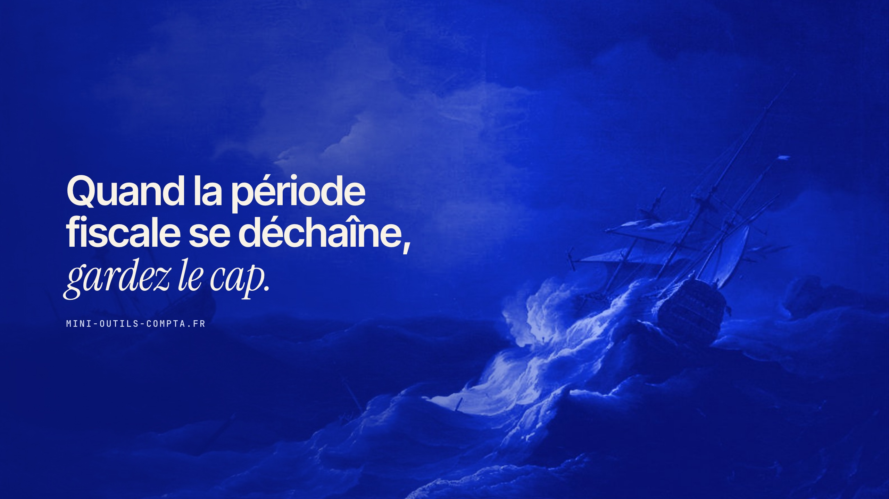
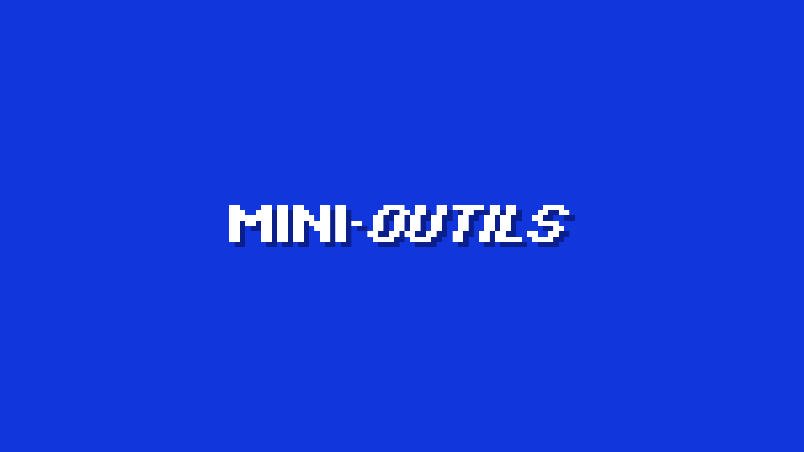

À propos
Goodies Mini-outils.
But de la page : proposer des stickers à imprimer et des fonds d'écran aux couleurs de Mini-outils, pour garder le cap jusque sur le bureau.
Les stickers
Un sticker sur l'ordinateur ou au bord de l'écran rappelle qu'il existe un outil pour les écritures répétitives. Deux versions, crème ou bleue, à imprimer vous-même.
Pour les imprimer :
- Téléchargez la planche A4 : 10 stickers de 9 cm de large, 5 crème et 5 bleus.
- Imprimez-la sur du papier adhésif A4, à 100 % (taille réelle) et non « ajusté à la page ».
- Découpez le long du trait rose : il disparaît à la découpe et laisse des stickers aux coins arrondis.


Les fonds d'écran
Deux fonds d'écran, chacun en version ordinateur (2560 × 1440) et téléphone (1179 × 2556).






L'image de la tempête est tirée de « Ships in Distress in a Storm » de Peter Monamy (1681-1749), conservé à la Tate, passée en camaïeu bleu.